인간공학기사 (2013-03-10 기출문제)
1과목: 인간공학개론
1. 다음 중 인간공학에 관한 설명으로 가장 적절하지 않은 것은?
- 인간의 특성 및 한계를 고려한다.
- 인간을 기계와 작업에 맞추는 학문이다.
- 인간 활동의 최적화를 연구하는 학문이다.
- 편리성, 안정성, 효율성을 제고하는 학문이다.
(정답률: 94%)

2. 다음 중 귀의 청각 과정이 순서대로 올바르게 나열된 것은?
- 공기전도 → 액체전도 → 신경전도
- 신경전도 → 액체전도 → 공기전도
- 액체전도 → 공기전도 → 신경전도
- 신경전도 → 공기전도 → 액체전도
(정답률: 95%)
3. 다음 중 인체측정 자료를 이용한 설계원칙에 있어 조절식 설계에 관한 설명으로 옳은 것은?
- 대상 집단내의 일부 사용자만 수용할 수 있는 설계 원리이다.
- 최대치나 최소치를 사용하는 것이 기술적으로 어려운 경우에 활용한다.
- 문의 높이, 비상 탈출구의 크기 등의 설계에 적용할 수 있다.
- 인체측정 자료의 복잡성을 다루지 않아도 된다는 장점이 있다.
(정답률: 86%)
4. 다음 중 조종장치와 표시장치에 대한 통제비와 관련된 설명으로 틀린 것은?
- C/D비 혹은 C/R비라 한다.
- 매슬로우(Maslow)에 의하여 개발된 이론이다.
- 통제기기와 시각 표시기기 간의 조작 민감성 정도를 나타낸다.
- 최적 통제비는 제어장치의 종류, 표시크기, 허용오차 등 시스템 매개변수에 영향을 받는다.
(정답률: 76%)
5. 반사경 없이 모든 방향으로 빛을 발하는 점광원에서 2m 떨어진 곳의 조도가 100 lux 라면 3m 떨어진 곳에서의 조도는 약 얼마인가?
- 44.4 lux
- 66.7 lux
- 100 lux
- 150 lux
(정답률: 60%)
6. 다음 중 실험실이 아닌 현장에서 실시되는 인간공학 연구의 일반적인 특징에 해당하는 것은?
- 실험 변수 제어가 용이하다.
- 많은 횟수의 반복적 실험이 가능하다.
- 좀 더 정확한 자료를 수집할 수 있다.
- 연구 결과를 현실 세계의 작업 환경에 일반화 시키기가 용이하다.
(정답률: 80%)
7. 다음 중 인간 기억의 여러 가지 형태에 대한 설명으로 틀린 것은?
- 단기기억의 용량은 보통 7청크(chunk)이며 학습에 의해 무한히 커질 수 있다.
- 자극을 받은 후 단기기억에 저장되기 전에 시각적인 정보는 아이코닉 기억(Iconic memory)에 잠시 저장된다.
- 계속해서 갱신해야 하는 단기기억의 용량은 보통의 단기기억 용량보다 작다.
- 단기기억에 있는 내용을 반복하여 학습(research)하면 장기기억으로 저장된다.
(정답률: 81%)
8. 다음 중 사용자 인터페이스에 대한 정의로 가장 적절하지 않은 것은?
- 사용성이란 사용자가 의도한 대로 제품을 사용할 수 있는 정도이다.
- 최고 경영자의 관점에서 제품을 설계하는 것을 사용자 중심 설계라고 한다.
- 사용성은 학습용이성, 효율성, 기억용이성, 주관적 만족도와 관련이 크다.
- 사용자가 어떤 장비를 사용하여 작업할 경우 정보의 상호전달이 이루어지는 부분을 사용자 인터페이스 라고 한다.
(정답률: 94%)
9. 다음 중 표시장치에 관한 설명으로 옳은 것은?
- 정보가 복잡한 경우 시각적 표시장치보다 청각적 표시 장치가 더 유리하다.
- 정보의 내용이 짧은 경우 청각적 표시장치보다 시각적 표시장치가 더 유리하다.
- 정보가 후에 재 참조되지 않는 경우 청각적 표시장치보다 시각적 표시장치가 더 유리하다.
- 정보가 즉각적인 행동을 요구하는 경우에는 시각적 표시장치보다 청각적 표시장치가 더 유리하다.
(정답률: 91%)
10. 다음 중 음에 관련된 단위가 아닌 것은?
- dB
- sone
- fL
- phon
(정답률: 91%)
11. 다음 중 작업공간에 관한 설명으로 가장 적절하지 않은 것은?
- 한 장소에 앉아서 수행하는 작업 활동에서, 사람이 작업하는데 사용하는 공간을 “작업공간 포락면”(work-space envelope) 이라 부른다.
- “정상 작업역”은 윗 팔을 자연스럽게 수직으로 늘어뜨린 채, 아래팔만으로 편하게 뻗어 파악할 수 있는 구역이다.
- “최대 작업역”은 아래팔과 윗 팔을 곧게 펴서 파악할 수 있는 구역이다.
- 접근 가능 거리는 필요한 인체치수의 95%tile 치수를 이용한다.
(정답률: 65%)
12. 다음 중 인간의 감지능력에 대한 설명으로 틀린 것은?
- JND가 클수록 감각의 변화를 검출하기 쉽다.
- Weber비는 감각의 감지에 대한 민감도를 나타낸다.
- 특정 감각의 감지능력은 JND(Just Noticeable Difference)로 표현된다.
- Weber비가 작을수록 분별력이 뛰어난 감각이라 할 수 있다.
(정답률: 55%)
13. 표시장치를 사용할 때 자극 전체를 직접 나타내거나 재생시키는 대신, 정보나 자극을 암호화하는 데 있어서 지켜야 할 일반적 지침으로 볼 수 없는 것은?
- 암호의 민감성
- 암호의 양립성
- 암호의 변별성
- 암호의 검출성
(정답률: 82%)
14. 다음 중 기능적 인체치수(functional body dimension) 측정에 대한 설명으로 가장 적절한 것은?
- 앉은 상태에서만 측정하여야 한다.
- 5~95%tile에 대해서만 정의된다.
- 신체부위의 동작범위를 측정하여야 한다.
- 움직이지 않는 표준자세에서 측정하여야 한다.
(정답률: 89%)
15. 한 사람이 손바닥에 100g의 추를 놓고 이 추와 구별할 수 있는 최소한의 무게 증가를 알아 보았더니 10g 으로 판정되었다. Webber의 법칙을 따를 경우 동일한 사람이 1000g 자리의 추와 구분할 수 있는 최소한의 무게 증가는 얼마인가?
- 10g
- 50g
- 100g
- 150g
(정답률: 74%)
16. 다음 중 인간의 후각 특성에 대한 설명으로 틀린 것은?
- 훈련을 통하면 식별 능력을 향상시킬 수 있다.
- 특정한 냄새에 대한 절대적 식별 능력은 떨어진다.
- 후각은 특정 물질이나 개인에 따라 민감도의 차이가 있다.
- 후각은 훈련을 통하여 일상적인 냄새의 수를 최대 10가지 종류에 대하여 식별이 가능하다.
(정답률: 92%)
17. 다음 중 인간의 정보처리과정, 기억의 능력과 한계 등에 관한 정보를 고려한 설계와 가장 관계가 깊은 것은?
- 계면 설계
- 사용자 중심의 설계
- 인지 특성을 고려한 설계
- 신체 특성을 고려한 설계
(정답률: 75%)
18. 각각의 변수가 다음과 같을 때 정보량을 구하는 식으로 틀린 것은?
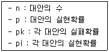
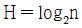
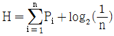
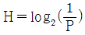
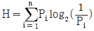
(정답률: 78%)
19. 다음 중 인간-기계의 체계에서 인간이 표시장치를 감지한 후에 발생하는 것은?
- 제어
- 출력
- 입력
- 정보처리
(정답률: 70%)
20. 다음 중 시력에 관한 설명으로 틀린 것은?
- 눈의 조절능력이 불충분한 경우, 근시 또는 원시가 된다.
- 시력은 세부적인 내용을 시각적으로 식별할 수 있는 능력을 말한다.
- 눈이 초점을 맞출 수 없는 가장 먼 거리를 원점이라 하는데 정상 시각에서 원점은 거의 무한하다.
- 여러 유형의 시력은 주로 망막 위에 초점이 맞추어지도록 홍채의 근육에 의한 눈의 조절능력에 달려있다.
(정답률: 57%)
2과목: 작업생리학
21. 다음 중 사무실 내의 추천반사율(reflectance)의 크기가 큰 것부터 작은 순서대로 올바르게 나열된 것은?
- 천정 ＞ 바닥 ＞ 벽
- 바닥 ＞ 벽 ＞ 천정
- 천정 ＞ 벽 ＞ 바닥
- 벽 ＞ 천정 ＞ 바닥
(정답률: 83%)
22. 다음 중 단일자극에 의해 발생하는 1회의 수축과 이완 과정을 무엇이라 하는가?
- 강축(tetanus)
- 연축(twitch)
- 긴장(tones)
- 강직(rigor)
(정답률: 83%)
23. 작업장의 소음 노출정도를 측정한 결과 다음 표와 같은 결과를 얻었다. 이 작업장에서 근무하는 근로자의 소음노출지수는 약 얼마인가?
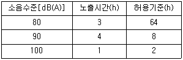
- 1.01
- 1.⑤
- 1.10
- 1.15
(정답률: 75%)
24. 다음 중 신체 반응 측정 장비와 내용을 잘못 짝지은 것은?
- EMG-정신적 스트레스를 측정, 기록한다.
- EEG-뇌의 활동에 따른 전위 변화를 기록한다.
- ECG-심장근의 수축에 따른 전기적 변화를 피부에 부착한 전극들로 검출, 증폭 기록한다.
- EOG-안구를 사이에 두고 수평과 수직 방향으로 붙인 전극간의 전위차를 증폭시켜 여러 방향에서 안구 운동을 기록한다.
(정답률: 78%)
25. 다음 중 실효온도(effective temperature)에 관한 설명으로 틀린 것은?
- 실효온도가 증가할수록 육체작업의 기능은 저하된다.
- 상대습도가 75%일 때의 특정 온도로 느끼는 열적 온감이다.
- 온도, 습도 및 공기 이동이 인체에 미치는 효과를 나타내는 경험적 감각지수이다.
- 실효온도는 저온조건에서는 습도의 영향을 과대평가하고, 고온조건에서는 과소평가한다.
(정답률: 55%)
26. 다음 중 정신부하의 측정에 사용되는 것은?
- 부정맥
- 산소소비량
- 혈압
- 에너지소비량
(정답률: 67%)
27. 다음 중 진동이 인체에 미치는 영향이 아닌 것은?
- 산소소비량 증가
- 심박수 감소
- 근장력 증가
- 말초혈관의 수축
(정답률: 77%)
28. 다음 중 관절의 연결형태가 안장관절(saddle joint)에 해당하는 것은?
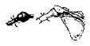
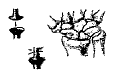
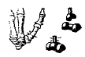
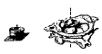
(정답률: 72%)
29. 다음 중 정적 평형상태에 대한 설명으로 틀린 것은?
- 힘이 거리에 반비례하여 발생한다.
- 물체나 신체가 움직이지 않는 상태이다.
- 작용하는 모든 힘의 총합이 0인 상태이다.
- 작용하는 모든 모멘트의 총합이 0인 상태이다.
(정답률: 68%)
30. 다음 중 전체환기가 필요한 경우로 가장 적절하지 않은 것은?
- 유해물질의 독성이 적을 때
- 실내에 오염물 발생이 많지 않을 때
- 실내 오염 배출원이 분산되어 있을 때
- 실내에 확산된 오염물의 농도가 전체로 보아 일정하지 않을 때
(정답률: 76%)
31. 다음 중 생리적 측정을 주관적 평점등급으로 대체하기 위하여 개발된 평가척도는?
- Likert Scale
- Garg Scale
- Fitts Scale
- Borg-RPE Scale
(정답률: 79%)
32. 작업자의 배기를 10분 동안 수집한 결과 200L이었고, 총 배기량 중 산소는 15%, 이산화탄소는 5%였다. 분당 산소소비량은 얼마인가? (단, 공기 중 산소는 21vol%, 질소는 79vol%가 존재하는 것으로 한다.)
- 1.25L
- 12.5L
- 20.25L
- 202.5L
(정답률: 38%)
33. 다음 중 팔을 수평으로 편 위치에서 수직위치로 내릴 때처럼 신체 중심선을 향한 신체부위의 동작은?
- flexion
- adduction
- extension
- abduction
(정답률: 59%)
34. 다음 중 점광원으로부터 어떤 물체나 표면에 도달하는 빛의 밀도를 나타내는 단위로 옳은 것은?
- Lambert
- candela
- nit
- lumen/m2
(정답률: 85%)
35. 다음 중 사업장에서 발생하는 소음의 노출기준을 정할 때 고려대상과 가장 거리가 먼 것은?
- 소음의 크기
- 소음의 높낮이
- 소음의 지속시간
- 소음 발생체의 물리적 특성
(정답률: 79%)
36. 다음 중 근육 수축 또는 이완시 생성 및 소모되는 물질(에너지원)이 아닌 것은?
- ATP(adenosine triphosphate)
- CP(creatine phosphate)
- 글리콜리시스(glycolysis)
- 글리코겐(glycogen)
(정답률: 77%)
37. 다음 중 근력(strength)과 지구력(endurance)에 대한 설명으로 틀린 것은?
- 동적근력(dynamic strength)을 등속력(isokinetic strength) 이라한다.
- 정적근력(static strength)을 등척력(isometric strength) 이라한다.
- 지구력(endurance)이란 근육을 사용하여 간헐적인 힘을 유지할 수 있는 활동을 말한다.
- 근육이 발휘하는 힘은 근육의 최대자율수축(MVC, maximum voluntary contraction)에 대한 백분율로 나타낸다.
(정답률: 65%)
38. 다음 중 에너지소비량에 관한 설명으로 틀린 것은?
- 휴식시의 에너지소비량은 대략 분당 0.1kcal정도 이다.
- 작업의 에너지소비량으로 단위 시간당 산소소비량을 고려한다.
- 작업방법, 작업 자세, 작업속도 등은 에너지 소비수준에 영향을 미치는 인자이다.
- 에너지소비량은 단위 시간당 산소소비량에 대하여 일반적으로 5kcal를 곱하여 산출한다.
(정답률: 58%)
39. 다음 중 근육 구조에 관한 설명으로 틀린 것은?
- 수축이나 이완 시 actin이나 myosin의 길이가 변한다.
- 골격근의 기본구조 단위는 근세포인 근섬유(muscle fiber) 이다.
- myosin은 두꺼운 필라멘트로 근섬유 분절의 가운데 위치하고 있다.
- 골격근은 그 종류에 따라 외관상 색으로 구별이 가능하며, 적근, 백근, 중간근 으로 구별할 수 있다.
(정답률: 56%)
40. 다음 중 육체적 작업에 필요한 산소와 포도당이 근육에 원활히 공급되기 위해 나타나는 순환기 계통의 생리적 반응이 아닌 것은?
- 심박출량 증가
- 심박수의 증가
- 혈압감소
- 혈류의 재분배
(정답률: 81%)
3과목: 산업심리학 및 관계법규
41. 다음 중 민주적 리더십에 관한 내용으로 옳은 것은?
- 리더에 의한 모든 정책의 결정
- 리더의 지원에 의한 집단 토론식 결정
- 리더의 과업 및 과업 수행 구성원 지정
- 리더의 최고 개입 또는 개인적인 결정의 완전한 자유
(정답률: 88%)
42. 10명으로 구성된 집단에서 소시오메트리(sociometry)연구를 사용하여 조사한 결과 긍정적인 상호작용을 맺고 있는 것이 16쌍일 때 이 집단의 응집성지수는 약 얼마인가?
- 0.222
- 0.356
- 0.401
- 0.504
(정답률: 67%)
43. 다음 중 작업에 수반되는 피로를 줄이기 위한 대책으로 적절하지 않은 것은?
- 작업부하의 경감
- 작업속도의 조절
- 동적 동작의 제거
- 작업 및 휴식시간의 조절
(정답률: 88%)
44. 다음 중 주의의 특성을 설명한 것으로 가장 거리가 먼 것은?
- 고도의 주의는 장시간 지속할 수 없다.
- 한 지점에 주의를 하면 다른 곳의 주의는 약해진다.
- 동시에 시각적 자극과 청각적 자극에 주의를 집중할 수 없다.
- 사람은 한 번에 여러 종류의 자극을 지각하거나 수용하는데 한계가 있다.
(정답률: 83%)
45. 다음 중 산업안전보건법령에서 정의한 중대재해에 해당하지 않는 것은?
- 사망자가 1인 이상 발생한 재해
- 부상자가 동시에 10인 이상 발생한 재해
- 직업성질병자가 동시에 5인 이상 발생한 재해
- 3개월 이상 요양을 요하는 부상자가 동시에 2인 이상 발생한 재해
(정답률: 85%)
46. 레빈(Lewin)이 “인간의 행동(B)은 개인적 특성(P)과 주어진 환경(E)과의 함수 관계에 있다.”라고 주장한 것을 토대로 다음 중 개인적 특성(P)에 해당하지 않는 것은?
- 연령
- 경험
- 기질
- 인간관계
(정답률: 77%)
47. 미사일을 탐지하는 경보 시스템이 있다. 조작자는 한 시간마다 일련의 스위치를 작동해야 하는데 휴먼에러확률(HEP)은 0.01이다. 2시간에서 5시간까지의 인간 신뢰도는 약 얼마인가?
- 0.9412
- 0.9510
- 0.9606
- 0.9703
(정답률: 50%)
48. 다음 중 대표적인 연역적 방법이며, 톱-다운(top-down)방식의 접근방법에 해당하는 시스템 안전 분석기법은?
- FTA
- ETA
- PHA
- FMEA
(정답률: 85%)
49. 다음 중 특정목적을 위해 공동의사를 결정하는 회의체로서 현대에 많은 기업체에서 경영의 실천과정으로 도입하고 있는 조직의 형태를 무엇이라 하는가?
- 직능식 조직
- 직계식 조직
- 위원회 조직
- 직계참모 조직
(정답률: 68%)
50. 다음 중 재해율에 관한 설명으로 옳은 것은?
- 강도율은 근로시간, 출근율과는 상관관계가 거의 없다.
- 도수율은 산업재해의 강도를 나타내는 척도로 사용된다.
- 연천인율은 1000명당 1년 동안 발생한 근로손실일수를 나타낸 것이다.
- 연간총근로시간의 정확한 산출이 곤란한 경우에는 1일 8시간, 연간 2400시간으로 한다.
(정답률: 78%)
51. 다음 중 NIOSH의 직무 스트레스 관리 모형의 연결이 잘못된 것은?
- 조직 요인 - 교대근무
- 조직 외 요인 - 가족상황
- 개인적인 요인 - 성격경향
- 완충작용 요인 - 대처능력
(정답률: 49%)
52. 다음 중 스트레스를 받을 때 몸에서 생성되는 호르몬으로 스트레스 정도를 파악하는데 사용되는 것은?
- 코티졸
- 환경호르몬
- 인슐린
- 스테로이드
(정답률: 86%)
53. 다음 중 제조물 책임 법에서 정의한 결함의 종류에 해당 하지 않는 것은?
- 제조상의 결함
- 기능상의 결함
- 설계상의 결함
- 표시상의 결함
(정답률: 70%)
54. 재해 원인을 불안전한 행동과 불안전한 상태로 구분할 때 다음 설명 중 틀린 것은?
- 불안전한 행동과 불안전한 상태로 직접원인이라 한다.
- 재해조사시 재해의 원인을 불안전한 행동이나 불안전한 상태 중 한 가지로 분류한다.
- 보호구의 결함은 불안전한 상태, 보호구의 미착용은 불안전한 행동으로 분류한다.
- 하인리히는 재해예방을 위해 불안전한 행동과 불안전한 상태의 제거가 가장 중요하다고 보았다.
(정답률: 69%)
55. 다음 중 직무만족과 직무불만족은 서로 다른 독립된 차원이며, 직무만족을 높이기 위해서는 동기 요인을 강화해야 한다고 설명하는 이론은?
- Alderfer 의 ERG이론
- McGregor의 X, Y 이론
- Herzberg의 2요인 이론
- Maslow 의 욕구위계 이론
(정답률: 60%)
56. 다음 중 하인리히(H.W. Heinrich)의 재해예방의 원리 5단계를 올바르게 나열한 것은?
- 평가분석 → 사실의 발견 → 조직 → 시정책의 선정 → 시정책의 적용
- 조직 → 사실의 발견 → 평가분석 → 시정책의 선정 → 시정책의 적용
- 조직 → 평가분석 → 사실의 발견 → 시정책의 선정 → 시정책의 적용
- 평가분석 → 조직 → 사실의 발견 → 시정책의 선정 → 시정책의 적용
(정답률: 78%)
57. 다음 중 인간의 경우에 어떠한 자극을 제시하고 이에 대한 동작을 시작하기까지의 소요시간을 무엇이라 하는가?
- 반응시간
- 자극시간
- 단순시간
- 선택시간
(정답률: 85%)
58. 위험성을 모르는 아이들이 세제나 약병의 마개를 열지 못하도록 안전마개를 부착하는 것처럼, 신체적 조건이나 정신적 능력이 낮은 사용자라 하더라도 사고를 낼 확률을 낮게 설계해 주는 것은?
- fail-safe 설계원칙
- fool-proof 설계원칙
- error proof 설계원칙
- error recovery 설계원칙
(정답률: 80%)
59. 다음 중 오하이오 주립대학의 리더십 연구에서 주장하는 구조 주도적(initiating structure)리더와 배려적(consideration) 리더에 관한 설명으로 틀린 것은?
- 배려적 리더는 관계 지향적, 인간중심적으로 인간에 관심을 가지고 있다.
- 구조 주도적 리더십은 구성원들의 성과환경을 구조화하는 리더십 행동이다.
- 구조적 리더십은 성과를 구체적으로 정확하게 평가하는 행동 유형을 말한다.
- 배려적 리더는 구성원의 과업을 설정, 배정하고 구성원과의 의사소통 네트워크를 명백히 한다.
(정답률: 67%)
60. 근로자 A는 작업공정 중 불필요한 작업을 수행함으로써 실수(에러)를 범하였다. 다음 중 이러한 휴먼에러에 해당하는 것은?
- ommission error
- time error
- extraneous error
- sequential error
(정답률: 60%)
4과목: 근골격계질환 예방을 위한 작업관리
61. 다음 중 RULA에서 사용하는 그룹 A의 평가 대상으로 옳은 것은?
- 목, 손목, 발목
- 목, 몸통, 다리
- 목, 팔, 다리
- 윗팔, 아래팔, 손목
(정답률: 68%)
62. 4개의 작업으로 구성된 조립공정의 주기시간(Cycle Time)이 40초일 때 공정효율은 얼마인가?
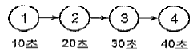
- 40.0%
- 57.5%
- 62.5%
- 72.5%
(정답률: 67%)
63. 다음 중 작업대상물의 품질 확인이나 수량의 조사, 검사 등에 사용되는 공정도시기호에 해당하는 것은?
- ○
- □
- △
- ⇨
(정답률: 82%)
64. 워크샘플링 조사에서 초기 idle rate 가 0.06 이라면, 95% 신뢰도를 위한 워크샘플링 회수는 약 몇 회인가? (단, Z0.0⑤ 는 2.58 이다.)
- 150
- 936
- 3162
- 3754
(정답률: 28%)
65. A 작업의 관측평균시간이 15초, 제1평가에 의한 속도평가계수는 120%이며, 제2평가에 의한 2차 조정계수가 10%일 때 객관적 평가법에 의한 정미시간은 몇 초인가?
- 19.8
- 23.8
- 26.1
- 28.8
(정답률: 42%)
66. 다음 중 유해요인조사결과 근골격계질환이 발생할 우려가 있는 경우 사업장 근골격계질환 예방ㆍ관리 프로그램의 기본 진행 순서로 가장 올바른 것은?
- 예방관리정책수립 → 교육/훈련실시 → 초기증상자 및 유해요인관리 → 의학적 관리 또는 환경 개선 → 프로그램 평가
- 교육/훈련실시 → 예방관리정책수립 → 프로그램 평가 → 초기증상자 및 유해요인관리 → 의학적 관리 또는 환경개선
- 초기증상자 및 유해요인관리 → 교육/훈련실시 → 예방관리정책수립 → 프로그램 평가 → 의학적 관리 또는 환경 개선
- 예방관리정책수립 → 초기증상자 및 유해요인관리 → 의학적 관리 또는 환경 개선 →교육/훈련실시 → 프로그램 평가
(정답률: 50%)
67. 다음 중 NIOSH의 들기작업 지침에서 들기지수를 산정하는 식에 반영되는 변수가 아닌 것은?
- 표면계수
- 비대칭계수
- 수직계수
- 빈도계수
(정답률: 62%)
68. 작업분석에서의 문제분석 도구 중에서 80-20의 원칙에 기초하여 빈도수별로 나열한 항목별 점유와 누적비율에 따라 불량이나 사고의 원인이 되는 중요 항목을 찾아가는 기법은?
- 특성요인도
- 산포도 기법
- PERT 차트
- 파레토 차트
(정답률: 81%)
69. 다음 중 수공구를 이용한 작업의 개선 원리에 관한 설명으로 틀린 것은?
- 양손잡이를 모두 고려한 수공구를 선택한다.
- 동력공구는 그 무게를 지탱할 수 있도록 매달아서 사용한다.
- 손바닥 전체에 골고루 부하를 분포시키는 손잡이를 가진 것이 바람직하다.
- 손가락으로 잡는 power grip보다 손바닥으로 감싸 안아 잡는 pinch grip을 이용한다.
(정답률: 83%)
70. 다음 중 위험작업의 공학적 개선에 속하는 것은?
- 적절한 작업자의 선발
- 작업자의 교육 및 훈련
- 작업자의 작업속도 조절
- 작업자의 신체에 맞는 작업장 개선
(정답률: 79%)
71. 다음 중 동작 분석의 목적과 가장 거리가 먼 것은?
- 최적 동작의 구성을 위하여
- 작업 동작의 표준화를 위하여
- 작업자의 합리적 배치를 위하여
- 작업 동작의 각 요소에 대한 분석을 위하여
(정답률: 41%)
72. 다음 중 MTM(methode time measurement)법에서 12 Ib의 물건을 대략적인 위치로 20인치 운반하는 것을 올바르게 표시한 것은?
- M20B12
- M12B20
- M20B12/2
- M12B20/2
(정답률: 63%)
73. 표준시간 설정을 위하여 작업을 요소 작업으로 분할하여야 한다. 다음 중 요소 작업으로 분할시 유의 사항으로 가장 적절하지 않은 것은?
- 작업의 진행 순서에 따라 분할한다.
- 상수 요소작업과 변수 요소작업으로 구분한다.
- 측정 범위 내에서 요소 작업을 크게 분할한다.
- 규칙적인 요소 작업과 불규칙적인 요소 작업으로 구분한다.
(정답률: 68%)
74. 다음 중 산업안전보건법령에 따라 사업주가 근골격계 부담작업 종사자에게 반드시 주지시켜야 하는 내용과 가장 거리가 먼 것은?
- 근골격계부담작업의 유해요인
- 근골격계질환의 징후 및 증상
- 근골격계질환의 요양 및 보상
- 근골격계질환 발생시 대처 요령
(정답률: 82%)
75. 다음 중 유해요인 조사 방법에 관한 설명으로 틀린 것은?
- NIOSH Guideline은 중량물 작업의 분석에 이용된다.
- RULA, OWAS는 자세 평가를 주목적으로 한다.
- REBA는 상지, RULA는 하지자세를 평가하기 위한 방법이다.
- JSI(Job Strain Index)는 작업의 재설계 등을 검토할 때에 이용한다.
(정답률: 72%)
76. 다음 중 동작경제의 원칙에 속하지 않는 것은?
- 공정 개선의 원칙
- 신체의 사용에 관한 원칙
- 작업장의 배치에 관한 원칙
- 공구 및 설비의 디자인에 관한 원칙
(정답률: 74%)
77. 근골격계 질환 중 손과 손목에 관련된 질환으로 분류되지 않는 것은?
- 결절종(Ganglion)
- 회전근개증후군(Rotator Cuff Syndrome)
- 수근관증후군(Carpal Tunnel Syndrome)
- 드퀘르뱅 건초염(Dequervain's Syndrome)
(정답률: 68%)
78. 다음 중 작업관리에서 작업 상황을 개선하기 위해 필수적으로 거쳐야 하는 단계로 가장 적절하지 않은 것은?
- 연구대상의 선정
- 과거 작업방법의 분석
- 분석 자료의 검토
- 개선안의 수립 및 도입
(정답률: 80%)
79. 다음 중 개선의 ECRS에 대한 내용으로 옳은 것은?
- Economic - 경제성
- Combine - 결합
- Reduce - 절감
- Specification - 규격
(정답률: 78%)
80. 다음 중 근골격계질환의 요인에 있어 작업관련 요인에 해당하는 것은?
- 직장 경력
- 휴식 시간 부족
- 작업 만족도
- 작업의 자율적 조절
(정답률: 68%)